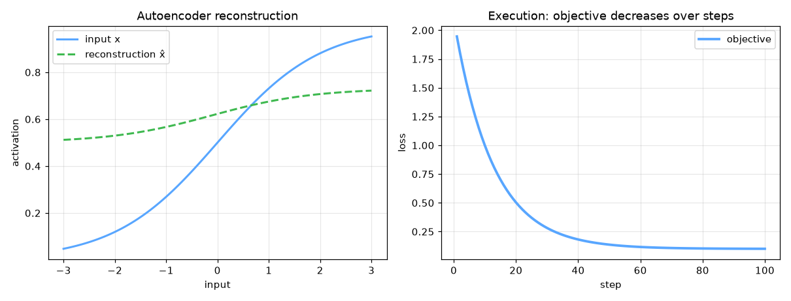

Anomaly Detection / Autoencoder — AI engineering example · part of the MLOps monorepo
This example is grounded in Anomaly Detection / Autoencoder. The equations below drive every forward and backward pass in the implementation.
Autoencoders learn compressed representations by minimizing reconstruction error. The encoder maps input $x$ to a latent code $z$. The decoder reconstructs $\hat{x}$ from $z$. L2 regularization and bottleneck architecture prevent trivial identity solutions.
Concrete forward-pass / update evaluation using the algorithm's own equations:
A step-by-step, intuitive explanation with concrete data so the formal equations above become clear:
Run this self-contained snippet in a Python shell to watch every step execute and print its value:
import numpy as np
x = np.array([0.2, 0.8]); xh = np.array([0.25, 0.75]) # transaction & its reconstruction
print("anomaly score =", float(np.sum((x - xh)**2))) # high error => likely fraud
Plots of the execution above — left: the concept; right: the step-by-step computation visualised. Interactive latent space traversal; reconstruction error vs latent dimension; bottleneck visualization.
The example follows a consistent data → train → evaluate → serve pipeline. Inputs are loaded and validated, transformed by the core algorithm, scored against held-out data, and exposed through a REST API.
| Class | Public methods | Responsibility |
|---|---|---|
FraudRequest | — | Single credit card transaction for fraud detection. |
FraudBulkRequest | — | Bulk fraud detection request. |
FraudResponse | — | Fraud detection response for a single transaction. |
BulkFraudResponse | — | Bulk fraud detection response. |
DriftResponse | — | Drift detection response. |
StatsResponse | — | Model statistics response. |
FraudDetectionAutoencoder | _he_init, _xavier_init, _forward, fit, _compute_threshold, reconstruction_error, reconstruction_error_normalized, predict_proba, predict, is_fraud, accuracy, precision, recall, f1_score, false_positive_rate, evaluate, save, load, to_dict | Feedforward autoencoder for credit card fraud detection. The model is trained on normal transactions only. Fraudulent transactions are detected via high reconstruction error — the model has never learned to reconstruct anomalous patterns. Architecture: Input -> Hidden (ReLU) -> Output (Linear, same dim as input) Args: hidden_dim: Size of the hidden (encoding) layer learning_rate: Gradient descent step size n_iterations: Maximum number of training iterations threshold_percentile: Percentile for anomaly threshold weight_decay: L2 regularization strength hidden_activation: Activation for hidden layer ('relu' or 'tanh') random_seed: Random seed for reproducibility |
data.py reads the source dataset and splits train/test.model.py applies the mathematics from Section 1.api.py exposes prediction endpoints with drift detection.Key design choices in this module: a pure-NumPy implementation (no PyTorch/TensorFlow), schema validation via ai_core.validation, structured JSON logging through ai_core.logging, Prometheus metrics from ai_core.metrics, and MLflow/model-registry persistence via ai_core.model_registry. The FastAPI service wraps the trained model with observability middleware from ai_core.fastapi_middleware.
The most important behaviour is summarised below; full source for each module is collapsible so the page stays readable while remaining self-contained.
FraudDetectionAutoencoder.fit(X, X_val, X_test, y_test)Train the autoencoder on normal transactions. Args: X: Normal transaction data (n_samples, n_features) X_val: Optional validation data X_test: Optional test data (with both normal and fraud) y_test: Optional test labels Returns: self
FraudDetectionAutoencoder.predict(X, threshold)Return 1 (fraud) if reconstruction error > threshold, else 0.
FraudDetectionAutoencoder.evaluate(X, y)Compute all evaluation metrics for fraud detection.
"""Feedforward neural network for credit card fraud detection via reconstruction error.
Uses an autoencoder architecture: the model learns to reconstruct normal
transactions. At inference time, fraudulent transactions (which deviate from
normal patterns) produce high reconstruction errors and are flagged as anomalies.
Architecture:
Input (n_features) -> Hidden (hidden_dim, ReLU) -> Output (n_features, Linear)
Loss: Mean Squared Error (reconstruction loss)
Optimizer: Gradient Descent with He initialization (from scratch with NumPy)
"""
from dataclasses import dataclass, field
from typing import Literal
import numpy as np
def _relu(z: np.ndarray) -> np.ndarray:
"""ReLU activation function."""
return np.maximum(0, z)
def _relu_derivative(z: np.ndarray) -> np.ndarray:
"""Derivative of ReLU."""
return (z > 0).astype(z.dtype)
def _tanh(z: np.ndarray) -> np.ndarray:
"""Tanh activation function."""
return np.tanh(z)
def _mse_loss(y_true: np.ndarray, y_pred: np.ndarray) -> float:
"""Mean squared error loss."""
return float(np.mean((y_true - y_pred) ** 2))
@dataclass
class FraudDetectionAutoencoder:
"""Feedforward autoencoder for credit card fraud detection.
The model is trained on normal transactions only. Fraudulent transactions
are detected via high reconstruction error — the model has never learned
to reconstruct anomalous patterns.
Architecture: Input -> Hidden (ReLU) -> Output (Linear, same dim as input)
Args:
hidden_dim: Size of the hidden (encoding) layer
learning_rate: Gradient descent step size
n_iterations: Maximum number of training iterations
threshold_percentile: Percentile for anomaly threshold
weight_decay: L2 regularization strength
hidden_activation: Activation for hidden layer ('relu' or 'tanh')
random_seed: Random seed for reproducibility
"""
hidden_dim: int = 8
learning_rate: float = 0.001
n_iterations: int = 2000
threshold_percentile: float = 95.0
weight_decay: float = 0.0001
hidden_activation: Literal["relu", "tanh"] = "relu"
random_seed: int = 42
# Learned parameters
input_dim: int = 0
W1: np.ndarray | None = None
b1: np.ndarray | None = None
W2: np.ndarray | None = None
b2: np.ndarray | None = None
# Training metadata
training_mode: str = "supervised"
loss_history: list[float] = field(default_factory=list)
val_loss_history: list[float] = field(default_factory=list)
mean_: np.ndarray | None = None
std_: np.ndarray | None = None
threshold: float = 1.0
accuracy_history: list[float] = field(default_factory=list)
def _he_init(self, n_in: int, n_out: int, rng: np.random.Generator) -> np.ndarray:
"""He initialization for ReLU networks."""
return rng.normal(0, np.sqrt(2.0 / n_in), (n_in, n_out))
def _xavier_init(self, n_in: int, n_out: int, rng: np.random.Generator) -> np.ndarray:
"""Xavier initialization for tanh networks."""
return rng.normal(0, np.sqrt(1.0 / n_in), (n_in, n_out))
def _forward(self, X: np.ndarray) -> tuple[np.ndarray, np.ndarray, np.ndarray]:
"""Forward pass through the autoencoder.
Returns: (reconstruction, hidden_activations, z1)
"""
z1 = np.dot(X, self.W1) + self.b1
a1 = _relu(z1) if self.hidden_activation == "relu" else _tanh(z1)
z2 = np.dot(a1, self.W2) + self.b2
return z2, a1, z1
def fit(
self,
X: np.ndarray,
X_val: np.ndarray | None = None,
X_test: np.ndarray | None = None,
y_test: np.ndarray | None = None,
) -> "FraudDetectionAutoencoder":
"""Train the autoencoder on normal transactions.
Args:
X: Normal transaction data (n_samples, n_features)
X_val: Optional validation data
X_test: Optional test data (with both normal and fraud)
y_test: Optional test labels
Returns:
self
"""
rng = np.random.default_rng(self.random_seed)
X = np.asarray(X, dtype=float)
n_samples, n_features = X.shape
self.input_dim = n_features
# Normalize features
self.mean_ = X.mean(axis=0)
self.std_ = np.where(X.std(axis=0) < 1e-8, 1.0, X.std(axis=0))
X_norm = (X - self.mean_) / self.std_
X_val_norm = None
if X_val is not None:
X_val_norm = (X_val - self.mean_) / self.std_
self.val_loss_history = []
# Initialize weights
if self.hidden_activation == "relu":
self.W1 = self._he_init(n_features, self.hidden_dim, rng)
else:
self.W1 = self._xavier_init(n_features, self.hidden_dim, rng)
self.b1 = np.zeros(self.hidden_dim)
self.W2 = self._xavier_init(self.hidden_dim, n_features, rng)
self.b2 = np.zeros(n_features)
self.loss_history = []
for epoch in range(self.n_iterations):
# Forward pass (reconstruct input from itself)
recon, a1, z1 = self._forward(X_norm)
loss = _mse_loss(X_norm, recon)
# L2 regularization
l2_penalty = self.weight_decay * (np.sum(self.W1**2) + np.sum(self.W2**2))
loss += l2_penalty
self.loss_history.append(loss)
# Backpropagation
m = n_samples
dz2 = 2 * (recon - X_norm) / m
dW2 = np.dot(a1.T, dz2) + self.weight_decay * self.W2
db2 = np.sum(dz2, axis=0)
da1 = np.dot(dz2, self.W2.T)
if self.hidden_activation == "relu":
dz1 = da1 * _relu_derivative(z1)
else:
dz1 = da1 * (1 - _tanh(z1) ** 2)
dW1 = np.dot(X_norm.T, dz1) + self.weight_decay * self.W1
db1 = np.sum(dz1, axis=0)
# Gradient descent
self.W1 -= self.learning_rate * dW1
self.b1 -= self.learning_rate * db1
self.W2 -= self.learning_rate * dW2
self.b2 -= self.learning_rate * db2
# Track validation loss
if X_val_norm is not None and epoch % 50 == 0:
val_recon, _, _ = self._forward(X_val_norm)
val_loss = _mse_loss(X_val_norm, val_recon)
self.val_loss_history.append(val_loss)
# Early stopping
if epoch > 100 and abs(self.loss_history[-1] - self.loss_history[-100]) < 1e-7:
break
# Compute anomaly threshold from training data
self._compute_threshold(X_norm)
# Track accuracy on test set if provided
if X_test is not None and y_test is not None:
X_test_norm = (X_test - self.mean_) / self.std_
errors = self.reconstruction_error_normalized(X_test_norm)
predictions = (errors > self.threshold).astype(int)
self.accuracy_history = [float(np.mean(predictions == y_test))]
return self
def _compute_threshold(self, X_norm: np.ndarray) -> None:
"""Compute anomaly threshold from reconstruction errors on training data."""
errors = self.reconstruction_error_normalized(X_norm)
self.threshold = float(np.percentile(errors, self.threshold_percentile))
def reconstruction_error(self, X: np.ndarray) -> np.ndarray:
"""Compute per-sample reconstruction error (MSE)."""
X = np.asarray(X, dtype=float)
X_norm = (X - self.mean_) / self.std_
return self.reconstruction_error_normalized(X_norm)
def reconstruction_error_normalized(self, X_norm: np.ndarray) -> np.ndarray:
"""Compute reconstruction error on normalized input."""
if self.W1 is None:
raise ValueError("Model not trained. Call fit() first.")
recon, _, _ = self._forward(X_norm)
errors = np.mean((X_norm - recon) ** 2, axis=1)
return errors
def predict_proba(self, X: np.ndarray) -> np.ndarray:
"""Return fraud probability (normalized reconstruction error)."""
X = np.asarray(X, dtype=float)
X_norm = (X - self.mean_) / self.std_
errors = self.reconstruction_error_normalized(X_norm)
max_error = max(float(errors.max()), self.threshold * 2, 1e-8)
proba = np.clip(errors / max_error, 0.0, 1.0)
return proba
def predict(self, X: np.ndarray, threshold: float | None = None) -> np.ndarray:
"""Return 1 (fraud) if reconstruction error > threshold, else 0."""
thr = threshold if threshold is not None else self.threshold
errors = self.reconstruction_error(X)
return (errors > thr).astype(int)
def is_fraud(self, X: np.ndarray, threshold: float | None = None) -> np.ndarray:
"""Return boolean fraud flags."""
return self.predict(X, threshold=threshold).astype(bool)
def accuracy(self, X: np.ndarray, y: np.ndarray) -> float:
"""Compute classification accuracy."""
predictions = self.predict(X)
return float(np.mean(predictions == y))
def precision(self, X: np.ndarray, y: np.ndarray) -> float:
"""Compute precision."""
predictions = self.predict(X)
tp = np.sum((predictions == 1) & (y == 1))
fp = np.sum((predictions == 1) & (y == 0))
if tp + fp == 0:
return 0.0
return float(tp / (tp + fp))
def recall(self, X: np.ndarray, y: np.ndarray) -> float:
"""Compute recall."""
predictions = self.predict(X)
tp = np.sum((predictions == 1) & (y == 1))
fn = np.sum((predictions == 0) & (y == 1))
if tp + fn == 0:
return 0.0
return float(tp / (tp + fn))
def f1_score(self, X: np.ndarray, y: np.ndarray) -> float:
"""Compute F1 score."""
p = self.precision(X, y)
r = self.recall(X, y)
if p + r == 0:
return 0.0
return float(2 * p * r / (p + r))
def false_positive_rate(self, X: np.ndarray, y: np.ndarray) -> float:
"""Compute false positive rate."""
predictions = self.predict(X)
fp = np.sum((predictions == 1) & (y == 0))
tn = np.sum((predictions == 0) & (y == 0))
if fp + tn == 0:
return 0.0
return float(fp / (fp + tn))
def evaluate(self, X: np.ndarray, y: np.ndarray) -> dict[str, float]:
"""Compute all evaluation metrics for fraud detection."""
predictions = self.predict(X)
tp = int(np.sum((predictions == 1) & (y == 1)))
fp = int(np.sum((predictions == 1) & (y == 0)))
fn = int(np.sum((predictions == 0) & (y == 1)))
tn = int(np.sum((predictions == 0) & (y == 0)))
accuracy = float(np.mean(predictions == y))
precision = tp / (tp + fp) if (tp + fp) > 0 else 0.0
recall = tp / (tp + fn) if (tp + fn) > 0 else 0.0
f1 = 2 * precision * recall / (precision + recall) if (precision + recall) > 0 else 0.0
fpr = fp / (fp + tn) if (fp + tn) > 0 else 0.0
return {
"accuracy": accuracy,
"precision": precision,
"recall": recall,
"f1": f1,
"false_positive_rate": fpr,
"anomaly_threshold": float(self.threshold),
"n_true_positives": tp,
"n_false_positives": fp,
"n_true_negatives": tn,
"n_false_negatives": fn,
}
def save(self, path: str) -> None:
"""Save model parameters to disk."""
if self.W1 is None:
raise ValueError("Cannot save untrained model")
np.savez(
path,
W1=self.W1,
b1=self.b1,
W2=self.W2,
b2=self.b2,
input_dim=np.array([self.input_dim]),
hidden_dim=np.array([self.hidden_dim]),
learning_rate=np.array([self.learning_rate]),
n_iterations=np.array([self.n_iterations]),
threshold_percentile=np.array([self.threshold_percentile]),
weight_decay=np.array([self.weight_decay]),
hidden_activation=np.array([self.hidden_activation]),
random_seed=np.array([self.random_seed]),
threshold=np.array([self.threshold]),
mean_=self.mean_,
std_=self.std_,
loss_history=np.array(self.loss_history),
val_loss_history=np.array(self.val_loss_history),
accuracy_history=np.array(self.accuracy_history),
training_mode=np.array([self.training_mode]),
)
@classmethod
def load(cls, path: str) -> "FraudDetectionAutoencoder":
"""Load model parameters from disk."""
data = np.load(path)
model = cls(
hidden_dim=int(data["hidden_dim"].item()),
learning_rate=float(data["learning_rate"].item()),
n_iterations=int(data["n_iterations"].item()),
threshold_percentile=float(data["threshold_percentile"].item()),
weight_decay=float(data["weight_decay"].item()),
hidden_activation=str(data["hidden_activation"].item()),
random_seed=int(data["random_seed"].item()),
)
model.W1 = data["W1"]
model.b1 = data["b1"]
model.W2 = data["W2"]
model.b2 = data["b2"]
model.input_dim = int(data["input_dim"].item())
model.threshold = float(data["threshold"].item())
model.mean_ = data["mean_"]
model.std_ = data["std_"]
model.loss_history = list(data["loss_history"])
model.val_loss_history = list(data["val_loss_history"])
model.accuracy_history = list(data["accuracy_history"])
model.training_mode = str(data["training_mode"].item())
return model
def to_dict(self) -> dict:
"""Return model configuration as a dict."""
return {
"input_dim": self.input_dim,
"hidden_dim": self.hidden_dim,
"learning_rate": self.learning_rate,
"n_iterations": self.n_iterations,
"threshold_percentile": self.threshold_percentile,
"weight_decay": self.weight_decay,
"hidden_activation": self.hidden_activation,
"random_seed": self.random_seed,
"training_mode": self.training_mode,
"threshold": self.threshold,
"n_epochs_run": len(self.loss_history),
"final_loss": self.loss_history[-1] if self.loss_history else 0.0,
}"""Training pipeline for credit card fraud detection using a feedforward autoencoder."""
import argparse
import os
from pathlib import Path
import numpy as np
from ai_core.logging import get_logger, setup_logging
from ai_core.model_registry import ModelRegistry
from anomaly_detection_fraud.data import generate_synthetic_data, save_training_data
from anomaly_detection_fraud.model import FraudDetectionAutoencoder
logger = get_logger(__name__)
def train(
model_dir: Path,
data_path: Path | None = None,
n_samples: int = 2000,
anomaly_fraction: float = 0.05,
hidden_dim: int = 8,
learning_rate: float = 0.001,
n_iterations: int = 2000,
threshold_percentile: float = 95.0,
weight_decay: float = 0.0001,
model_version: str = "1.0.0",
register_to_mlflow: bool = False,
random_seed: int = 42,
) -> dict:
"""Train the fraud detection autoencoder and save artifacts.
The model is trained on normal transactions only. Fraudulent transactions
are detected at inference time via high reconstruction error.
"""
X_full, y_full = generate_synthetic_data(
n_samples=n_samples, anomaly_fraction=anomaly_fraction, random_seed=random_seed
)
n_normal = int(np.sum(y_full == 0))
n_fraud = int(np.sum(y_full == 1))
logger.info(
"Loaded training data",
n_total=len(X_full),
n_normal=n_normal,
n_fraud=n_fraud,
data_path=str(data_path),
)
# Split: training on normal only, test with both
X_normal = X_full[y_full == 0]
X_anomaly = X_full[y_full == 1]
rng = np.random.default_rng(random_seed)
n_val = max(1, int(len(X_normal) * 0.2))
val_idx = rng.choice(len(X_normal), size=n_val, replace=False)
val_mask = np.zeros(len(X_normal), dtype=bool)
val_mask[val_idx] = True
X_train = X_normal[~val_mask]
X_val = X_normal[val_mask]
# Split anomaly data for test evaluation
n_test_anomaly = max(1, int(len(X_anomaly) * 0.5))
test_anom_idx = rng.choice(len(X_anomaly), size=n_test_anomaly, replace=False)
X_test_anomaly = X_anomaly[test_anom_idx]
y_test_anomaly = np.ones(n_test_anomaly, dtype=int)
test_norm_idx = rng.choice(len(X_normal), size=n_test_anomaly, replace=False)
X_test_normal = X_normal[test_norm_idx]
y_test_normal = np.zeros(n_test_anomaly, dtype=int)
X_test = np.vstack([X_test_normal, X_test_anomaly])
y_test = np.concatenate([y_test_normal, y_test_anomaly])
logger.info(
"Data split for anomaly detection",
n_train=len(X_train),
n_val=len(X_val),
n_test=len(X_test),
n_features=X_train.shape[1],
training_mode="autoencoder (normal data only)",
)
# Save training data for reproducibility
model_dir.mkdir(parents=True, exist_ok=True)
save_training_data(X_full, y_full, model_dir / "training_data.csv")
# Train model
model = FraudDetectionAutoencoder(
hidden_dim=hidden_dim,
learning_rate=learning_rate,
n_iterations=n_iterations,
threshold_percentile=threshold_percentile,
weight_decay=weight_decay,
random_seed=random_seed,
)
model.fit(X_train, X_val=X_val, X_test=X_test, y_test=y_test)
# Evaluate
test_metrics = model.evaluate(X_test, y_test)
logger.info(
"Training complete",
training_mode=model.training_mode,
n_epochs=len(model.loss_history),
final_loss=model.loss_history[-1] if model.loss_history else 0.0,
threshold=model.threshold,
test_metrics=test_metrics,
)
# Save model
model_path = model_dir / f"fraud_detection_model_v{model_version}.npz"
model.save(str(model_path))
# Save training chart
_save_chart(model, model_dir, model_version)
# Combined metrics for registry
train_errors = model.reconstruction_error(X_train)
metrics = {
**test_metrics,
"training_mode": "anomaly_detection",
"n_epochs_run": float(len(model.loss_history)),
"final_loss": model.loss_history[-1] if model.loss_history else 0.0,
"anomaly_threshold": float(model.threshold),
"threshold_percentile": float(threshold_percentile),
"n_train_samples": float(len(X_train)),
"n_val_samples": float(len(X_val)),
"n_test_samples": float(len(X_test)),
"n_normal_train": float(len(X_train)),
"n_fraud_detected": float(test_metrics["n_true_positives"]),
"hidden_dim": float(hidden_dim),
"learning_rate": float(learning_rate),
"weight_decay": float(weight_decay),
"train_mean_recon_error": float(np.mean(train_errors)),
"n_features": float(X_train.shape[1]),
}
# Register model
registry = ModelRegistry(base_dir=model_dir)
registry.save_model(
model_name="credit-card-fraud-detection",
model_version=model_version,
model_type="anomaly_detection",
metrics=metrics,
parameters={
"hidden_dim": hidden_dim,
"learning_rate": learning_rate,
"n_iterations": n_iterations,
"threshold_percentile": threshold_percentile,
"weight_decay": weight_decay,
"random_seed": random_seed,
},
artifacts={
f"fraud_detection_model_v{model_version}.npz": model_path,
"training_data.csv": model_dir / "training_data.csv",
},
tags={
"framework": "numpy",
"task": "anomaly_detection",
"model_type": "feedforward_neural_network",
},
)
if register_to_mlflow:
registry.log_to_mlflow(
model_name="credit-card-fraud-detection",
model_version=model_version,
metrics=metrics,
params={
"hidden_dim": hidden_dim,
"learning_rate": learning_rate,
"n_iterations": n_iterations,
"threshold_percentile": threshold_percentile,
"weight_decay": weight_decay,
"random_seed": random_seed,
},
artifacts={
"model": str(model_path),
"chart": str(model_dir / f"fraud_detection_v{model_version}.png"),
"training_data": str(model_dir / "training_data.csv"),
},
tags={"model_type": "anomaly_detection", "framework": "numpy"},
)
logger.info(
"Registered model to MLflow", model="credit-card-fraud-detection", version=model_version
)
return metrics
def _save_chart(model: FraudDetectionAutoencoder, output_dir: Path, version: str) -> None:
"""Save the training loss chart."""
import matplotlib
matplotlib.use("Agg")
import matplotlib.pyplot as plt
if not model.loss_history:
return
fig, ax = plt.subplots(figsize=(10, 5))
ax.plot(model.loss_history, color="steelblue", linewidth=1.5)
ax.set_xlabel("Training Iteration")
ax.set_ylabel("Loss (MSE + L2)")
ax.set_title("Credit Card Fraud Detection Autoencoder Training Loss")
ax.grid(True, alpha=0.3)
ax.set_yscale("log")
plt.tight_layout()
chart_path = output_dir / f"fraud_detection_v{version}.png"
plt.savefig(str(chart_path), dpi=100)
plt.close()
logger.info("Chart saved", path=str(chart_path))
def main():
parser = argparse.ArgumentParser(description="Train credit card fraud detection neural network")
parser.add_argument("--model-dir", type=Path, default=Path(os.getenv("MODEL_DIR", "/models")))
parser.add_argument("--data-path", type=Path, default=None)
parser.add_argument("--n-samples", type=int, default=int(os.getenv("N_SAMPLES", "2000")))
parser.add_argument("--hidden-dim", type=int, default=int(os.getenv("HIDDEN_DIM", "8")))
parser.add_argument(
"--learning-rate", type=float, default=float(os.getenv("LEARNING_RATE", "0.001"))
)
parser.add_argument("--n-iterations", type=int, default=int(os.getenv("N_ITERATIONS", "2000")))
parser.add_argument(
"--threshold-percentile",
type=float,
default=float(os.getenv("THRESHOLD_PERCENTILE", "95.0")),
)
parser.add_argument(
"--weight-decay", type=float, default=float(os.getenv("WEIGHT_DECAY", "0.0001"))
)
parser.add_argument("--model-version", type=str, default=os.getenv("MODEL_VERSION", "1.0.0"))
parser.add_argument("--random-seed", type=int, default=int(os.getenv("RANDOM_SEED", "42")))
parser.add_argument(
"--register-mlflow",
action="store_true",
default=os.getenv("REGISTER_MLFLOW", "false").lower() == "true",
)
parser.add_argument("--log-level", type=str, default=os.getenv("LOG_LEVEL", "INFO"))
args = parser.parse_args()
setup_logging(args.log_level)
args.model_dir.mkdir(parents=True, exist_ok=True)
metrics = train(
model_dir=args.model_dir,
data_path=args.data_path,
n_samples=args.n_samples,
hidden_dim=args.hidden_dim,
learning_rate=args.learning_rate,
n_iterations=args.n_iterations,
threshold_percentile=args.threshold_percentile,
weight_decay=args.weight_decay,
model_version=args.model_version,
register_to_mlflow=args.register_mlflow,
random_seed=args.random_seed,
)
logger.info("Training finished", metrics=metrics, model_dir=str(args.model_dir))
if __name__ == "__main__":
main()"""Data generation and preprocessing for credit card fraud detection."""
from pathlib import Path
import numpy as np
import pandas as pd
FEATURE_NAMES = [
"time_since_last_transaction",
"transaction_amount",
"merchant_category",
"merchant_risk_score",
"cardholder_risk_score",
"distance_from_home",
"is_online",
"is_foreign",
"hour_of_day",
"day_of_week",
"account_age_days",
"recent_transaction_count",
"avg_transaction_amount_24h",
"device_risk_score",
"ip_risk_score",
]
DEFAULT_N_SAMPLES = 2000
DEFAULT_ANOMALY_FRACTION = 0.05
def generate_synthetic_data(
n_samples: int = DEFAULT_N_SAMPLES,
anomaly_fraction: float = DEFAULT_ANOMALY_FRACTION,
random_seed: int = 42,
) -> tuple[np.ndarray, np.ndarray]:
"""Generate synthetic credit card transaction data with fraud labels.
Returns:
Tuple of (X, y) where X is feature matrix and y is labels (1=fraud, 0=legit).
"""
rng = np.random.default_rng(random_seed)
n_fraud = max(1, int(n_samples * anomaly_fraction))
n_normal = n_samples - n_fraud
normal_data = _generate_normal_transactions(n_normal, rng)
fraud_data = _generate_fraud_transactions(n_fraud, rng)
X = np.vstack([normal_data, fraud_data])
y = np.concatenate([np.zeros(n_normal, dtype=int), np.ones(n_fraud, dtype=int)])
indices = rng.permutation(len(X))
return X[indices], y[indices]
def _generate_normal_transactions(n: int, rng: np.random.Generator) -> np.ndarray:
"""Generate legitimate credit card transactions."""
return np.column_stack(
[
rng.uniform(0, 1440, n), # time_since_last_transaction (minutes)
rng.uniform(5, 500, n), # transaction_amount
rng.integers(0, 12, n), # merchant_category
rng.uniform(0.1, 0.4, n), # merchant_risk_score
rng.uniform(0.1, 0.3, n), # cardholder_risk_score
rng.uniform(0, 5, n), # distance_from_home (miles)
rng.integers(0, 2, n), # is_online
rng.choice(2, size=n, p=[0.9, 0.1]), # is_foreign
rng.integers(8, 22, n), # hour_of_day
rng.integers(0, 7, n), # day_of_week
rng.integers(30, 3650, n), # account_age_days
rng.integers(0, 15, n), # recent_transaction_count
rng.uniform(20, 200, n), # avg_transaction_amount_24h
rng.uniform(0.05, 0.3, n), # device_risk_score
rng.uniform(0.05, 0.3, n), # ip_risk_score
]
).astype(float)
def _generate_fraud_transactions(n: int, rng: np.random.Generator) -> np.ndarray:
"""Generate fraudulent credit card transactions."""
return np.column_stack(
[
rng.uniform(0, 30, n), # time_since_last_transaction (unusual bursts)
rng.uniform(300, 5000, n), # transaction_amount (large)
rng.integers(0, 12, n), # merchant_category
rng.uniform(0.6, 0.95, n), # merchant_risk_score (high)
rng.uniform(0.6, 0.95, n), # cardholder_risk_score (high)
rng.uniform(50, 500, n), # distance_from_home (far)
rng.choice(2, size=n, p=[0.3, 0.7]), # is_online (more likely online)
rng.choice(2, size=n, p=[0.3, 0.7]), # is_foreign (more likely foreign)
rng.integers(0, 6, n), # hour_of_day (late night) or 0-5
rng.integers(0, 7, n), # day_of_week
rng.integers(0, 30, n), # account_age_days (new accounts)
rng.integers(15, 50, n), # recent_transaction_count (bursts)
rng.uniform(500, 5000, n), # avg_transaction_amount_24h (high)
rng.uniform(0.7, 0.95, n), # device_risk_score (high)
rng.uniform(0.7, 0.95, n), # ip_risk_score (high)
]
).astype(float)
def generate_normal_data(
n_samples: int = DEFAULT_N_SAMPLES,
random_seed: int = 42,
) -> np.ndarray:
"""Generate only normal transactions for unsupervised/anomaly training."""
return _generate_normal_transactions(n_samples, np.random.default_rng(random_seed))
def load_training_data(
data_path: Path | None = None,
n_samples: int = DEFAULT_N_SAMPLES,
anomaly_fraction: float = DEFAULT_ANOMALY_FRACTION,
random_seed: int = 42,
) -> tuple[np.ndarray, np.ndarray]:
"""Load or generate credit card transaction data for training."""
if data_path and Path(data_path).exists():
df = pd.read_csv(data_path)
X = df[FEATURE_NAMES].values.astype(float)
y = df["is_fraud"].values.astype(int)
return X, y
return generate_synthetic_data(
n_samples=n_samples,
anomaly_fraction=anomaly_fraction,
random_seed=random_seed,
)
def save_training_data(X: np.ndarray, y: np.ndarray, path: Path) -> None:
"""Save training data to CSV."""
path = Path(path)
path.parent.mkdir(parents=True, exist_ok=True)
df = pd.DataFrame(X, columns=FEATURE_NAMES)
df["is_fraud"] = y
df.to_csv(path, index=False)
def train_test_split(
X: np.ndarray, y: np.ndarray, test_size: float = 0.2, random_seed: int | None = None
) -> tuple[np.ndarray, np.ndarray, np.ndarray, np.ndarray]:
"""Split data into train and test sets."""
n = len(X)
n_test = max(1, int(n * test_size))
if random_seed is not None:
rng = np.random.default_rng(random_seed)
indices = rng.permutation(n)
else:
indices = np.random.permutation(n)
test_idx = indices[:n_test]
train_idx = indices[n_test:]
return X[train_idx], X[test_idx], y[train_idx], y[test_idx]"""Production serving API for credit card fraud detection via autoencoder reconstruction error."""
import os
import time
from contextlib import asynccontextmanager
from pathlib import Path
import numpy as np
from ai_core.drift import DriftDetector
from ai_core.fastapi_middleware import add_observability_middleware
from ai_core.logging import get_logger, setup_logging
from ai_core.metrics import MetricsCollector
from ai_core.model_registry import ModelRegistry
from fastapi import FastAPI, HTTPException, Response
from pydantic import BaseModel, Field
from anomaly_detection_fraud.data import FEATURE_NAMES
from anomaly_detection_fraud.model import FraudDetectionAutoencoder
logger = get_logger(__name__)
# Configuration
MODEL_DIR = Path(os.getenv("MODEL_DIR", "/models"))
MODEL_VERSION = os.getenv("MODEL_VERSION", "latest")
METRICS_PORT = int(os.getenv("METRICS_PORT", os.getenv("FRAUD_DETECTION_METRICS_PORT", "8010")))
DRIFT_THRESHOLD = float(os.getenv("DRIFT_THRESHOLD", "0.2"))
class FraudRequest(BaseModel):
"""Single credit card transaction for fraud detection."""
time_since_last_transaction: float = Field(
..., ge=0, description="Minutes since last transaction"
)
transaction_amount: float = Field(..., ge=0, description="Transaction amount in USD")
merchant_category: float = Field(..., ge=0, le=11, description="Merchant category code (0-11)")
merchant_risk_score: float = Field(..., ge=0, le=1, description="Merchant risk score (0-1)")
cardholder_risk_score: float = Field(..., ge=0, le=1, description="Cardholder risk score (0-1)")
distance_from_home: float = Field(..., ge=0, description="Distance from home in miles")
is_online: float = Field(..., ge=0, le=1, description="Whether transaction is online (0/1)")
is_foreign: float = Field(..., ge=0, le=1, description="Whether transaction is foreign (0/1)")
hour_of_day: float = Field(..., ge=0, le=23, description="Hour of day (0-23)")
day_of_week: float = Field(..., ge=0, le=6, description="Day of week (0-6)")
account_age_days: float = Field(..., ge=0, description="Account age in days")
recent_transaction_count: float = Field(..., ge=0, description="Recent transaction count")
avg_transaction_amount_24h: float = Field(..., ge=0, description="Avg transaction amount (24h)")
device_risk_score: float = Field(..., ge=0, le=1, description="Device risk score (0-1)")
ip_risk_score: float = Field(..., ge=0, le=1, description="IP risk score (0-1)")
class FraudBulkRequest(BaseModel):
"""Bulk fraud detection request."""
samples: list[FraudRequest] = Field(..., min_length=1, max_length=100)
class FraudResponse(BaseModel):
"""Fraud detection response for a single transaction."""
is_fraud: bool
fraud_probability: float
reconstruction_error: float
anomaly_threshold: float
model_version: str
training_mode: str
class BulkFraudResponse(BaseModel):
"""Bulk fraud detection response."""
samples: list[FraudResponse]
n_frauds: int
n_samples: int
model_version: str
class DriftResponse(BaseModel):
"""Drift detection response."""
total_features: int
drifted_features: int
drift_ratio: float
drifted: list[dict]
all_results: list[dict]
class StatsResponse(BaseModel):
"""Model statistics response."""
n_features: int
hidden_dim: int
training_mode: str
n_epochs_run: int
final_loss: float
threshold: float
model_version: str
# Global model state
_model: FraudDetectionAutoencoder | None = None
_model_version: str = "unknown"
_metrics: MetricsCollector | None = None
_drift_detector: DriftDetector | None = None
_reference_data: np.ndarray | None = None
_recent_predictions: list[list[float]] = []
@asynccontextmanager
async def lifespan(app: FastAPI):
global _model, _model_version, _metrics, _drift_detector, _reference_data
setup_logging(os.getenv("LOG_LEVEL", "INFO"))
_metrics = MetricsCollector("credit_card_fraud_detection", port=METRICS_PORT)
app.state.metrics = _metrics
_drift_detector = DriftDetector(
feature_names=FEATURE_NAMES,
feature_types={f: "float" for f in FEATURE_NAMES},
psi_threshold=DRIFT_THRESHOLD,
)
_model, _model_version = _load_model()
_metrics.set_model_version(_model_version)
_metrics.set_model_info(
model_name="credit-card-fraud-detection",
model_version=_model_version,
model_type="anomaly_detection",
)
_reference_data = _load_reference_data()
logger.info("Model loaded", model="credit-card-fraud-detection", version=_model_version)
yield
logger.info("Shutting down credit-card-fraud-detection API")
def _load_model() -> tuple[FraudDetectionAutoencoder, str]:
registry = ModelRegistry(base_dir=MODEL_DIR)
try:
if MODEL_VERSION == "latest":
models = registry.list_models()
fraud_models = [
m for m in models if m.get("model_name") == "credit-card-fraud-detection"
]
if fraud_models:
fraud_models.sort(key=lambda m: m["model_version"], reverse=True)
latest = fraud_models[0]
model_dir = Path(latest["artifact_path"])
npz_files = list(model_dir.glob("fraud_detection_model_*.npz")) + list(
model_dir.glob("*.npz")
)
if npz_files:
return FraudDetectionAutoencoder.load(str(npz_files[0])), latest[
"model_version"
]
else:
model_dir = MODEL_DIR / "credit-card-fraud-detection" / MODEL_VERSION
if model_dir.exists():
npz_files = list(model_dir.glob("fraud_detection_model_*.npz")) + list(
model_dir.glob("*.npz")
)
if npz_files:
return FraudDetectionAutoencoder.load(str(npz_files[0])), MODEL_VERSION
except Exception as e:
logger.warning(f"Registry lookup failed: {e}")
npz_path = MODEL_DIR / "fraud_detection_model.npz"
if npz_path.exists():
return FraudDetectionAutoencoder.load(str(npz_path)), "legacy"
candidate_paths = [
Path("/app/artifacts/models/fraud_detection_model_v1.0.0.npz"),
Path(__file__).resolve().parents[3]
/ "artifacts"
/ "models"
/ "fraud_detection_model_v1.0.0.npz",
]
for p in candidate_paths:
if p.exists():
logger.info("Loading bundled baseline model", path=str(p))
return FraudDetectionAutoencoder.load(str(p)), "1.0.0-bundled"
logger.warning("No pre-existing model found on disk. Initializing baseline model.")
from anomaly_detection_fraud.data import generate_normal_data
X_base = generate_normal_data(n_samples=2000, random_seed=42)
model = FraudDetectionAutoencoder(
hidden_dim=8, learning_rate=0.001, n_iterations=500, random_seed=42
)
model.fit(X_base)
return model, "1.0.0-baseline"
def _load_reference_data() -> np.ndarray | None:
candidate_csvs = [
MODEL_DIR / "credit-card-fraud-detection" / _model_version / "training_data.csv",
MODEL_DIR / "training_data.csv",
Path("/app/artifacts/models/training_data.csv"),
Path(__file__).resolve().parents[3] / "artifacts" / "models" / "training_data.csv",
]
for csv_path in candidate_csvs:
if csv_path.exists():
try:
import pandas as pd
df = pd.read_csv(csv_path)
if all(f in df.columns for f in FEATURE_NAMES):
return df[FEATURE_NAMES].values
except Exception as e:
logger.warning("Could not read reference csv", path=str(csv_path), error=str(e))
from anomaly_detection_fraud.data import generate_normal_data
X_base = generate_normal_data(n_samples=500, random_seed=42)
return X_base
app = FastAPI(
title="Credit Card Fraud Detection API",
description="Feedforward autoencoder for detecting fraudulent credit card transactions",
version="1.0.0",
lifespan=lifespan,
)
add_observability_middleware(app)
@app.get("/")
def read_root():
return {
"service": "credit-card-fraud-detection-api",
"version": "1.0.0",
"model_version": _model_version,
"training_mode": _model.training_mode if _model else "unknown",
"features": FEATURE_NAMES,
"endpoints": {
"health": "/health",
"predict": "POST /predict",
"predict/bulk": "POST /predict/bulk",
"stats": "GET /stats",
"drift": "GET /drift",
"metrics": "/metrics",
},
}
@app.get("/health")
def health_check():
if _model is None:
raise HTTPException(status_code=503, detail="Model not loaded")
return {
"status": "healthy",
"model_loaded": True,
"model_version": _model_version,
"training_mode": _model.training_mode if _model else "unknown",
}
@app.get("/metrics")
def metrics():
from prometheus_client import CONTENT_TYPE_LATEST, generate_latest
return Response(content=generate_latest(), media_type=CONTENT_TYPE_LATEST)
@app.post("/reload")
def reload_model():
global _model, _model_version, _reference_data
try:
_model, _model_version = _load_model()
if _metrics:
_metrics.set_model_version(_model_version)
_metrics.set_model_info(
model_name="credit-card-fraud-detection",
model_version=_model_version,
model_type="anomaly_detection",
)
_reference_data = _load_reference_data()
logger.info(
"Model reloaded dynamically",
model="credit-card-fraud-detection",
version=_model_version,
)
return {"status": "reloaded", "model_version": _model_version}
except Exception as e:
logger.exception("Model reload failed", error=str(e))
raise HTTPException(status_code=500, detail=f"Reload failed: {e}") from e
@app.get("/drift", response_model=DriftResponse)
def drift_check():
if _drift_detector is None or _reference_data is None:
raise HTTPException(status_code=503, detail="Drift detection not available")
if len(_recent_predictions) < 10:
return DriftResponse(
total_features=len(FEATURE_NAMES),
drifted_features=0,
drift_ratio=0.0,
drifted=[],
all_results=[],
)
current = np.array(_recent_predictions[-100:])
results = _drift_detector.detect_drift(_reference_data, current)
summary = _drift_detector.summarize(results)
if _metrics:
_metrics.set_drift_ratio(summary["drift_ratio"])
return DriftResponse(**summary)
@app.get("/stats", response_model=StatsResponse)
def get_stats():
if _model is None or _model.W1 is None:
raise HTTPException(status_code=503, detail="Model not loaded")
return StatsResponse(
n_features=_model.input_dim,
hidden_dim=_model.hidden_dim,
training_mode=_model.training_mode,
n_epochs_run=len(_model.loss_history),
final_loss=_model.loss_history[-1] if _model.loss_history else 0.0,
threshold=_model.threshold,
model_version=_model_version,
)
def _extract_features(obs: FraudRequest) -> list[float]:
return [
obs.time_since_last_transaction,
obs.transaction_amount,
obs.merchant_category,
obs.merchant_risk_score,
obs.cardholder_risk_score,
obs.distance_from_home,
obs.is_online,
obs.is_foreign,
obs.hour_of_day,
obs.day_of_week,
obs.account_age_days,
obs.recent_transaction_count,
obs.avg_transaction_amount_24h,
obs.device_risk_score,
obs.ip_risk_score,
]
def _compute_fraud(obs: FraudRequest) -> FraudResponse:
if _model is None or _metrics is None:
raise HTTPException(status_code=503, detail="Model not loaded")
features = _extract_features(obs)
X = np.array([features])
start = time.time()
try:
recon_error = float(_model.reconstruction_error(X)[0])
is_fraud = bool(_model.is_fraud(X)[0])
proba = float(_model.predict_proba(X)[0])
duration = time.time() - start
_metrics.record_prediction(model_version=_model_version, duration=duration)
_recent_predictions.append(features)
if len(_recent_predictions) > 1000:
_recent_predictions.pop(0)
return FraudResponse(
is_fraud=is_fraud,
fraud_probability=round(proba, 4),
reconstruction_error=round(recon_error, 4),
anomaly_threshold=round(_model.threshold, 4),
model_version=_model_version,
training_mode=_model.training_mode if _model else "unknown",
)
except Exception as e:
_metrics.record_error(model_version=_model_version, error_type="prediction")
logger.exception("Fraud detection failed", error=str(e))
raise HTTPException(status_code=500, detail="Fraud detection failed") from e
@app.post("/predict", response_model=FraudResponse)
def predict_fraud(body: FraudRequest):
"""Detect fraud for a single transaction."""
return _compute_fraud(body)
@app.post("/predict/bulk", response_model=BulkFraudResponse)
def predict_fraud_bulk(body: FraudBulkRequest):
"""Detect fraud for multiple transactions."""
global _recent_predictions
if _model is None or _metrics is None:
raise HTTPException(status_code=503, detail="Model not loaded")
if len(body.samples) < 1 or len(body.samples) > 100:
raise HTTPException(status_code=422, detail="Batch size must be between 1 and 100")
X = np.array([_extract_features(s) for s in body.samples])
... (truncated) ...This example is a first-class consumer of the shared packages/ai-core library.
It reuses the following foundation modules instead of re-implementing infrastructure:
ai_core.config.Because every example shares ai_core, cross-cutting concerns (drift detection,
logging, metrics, model registry) behave identically across the 47 examples in this monorepo.